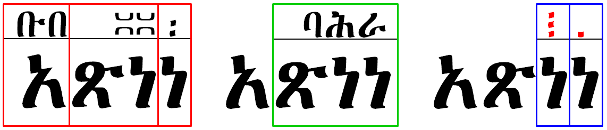
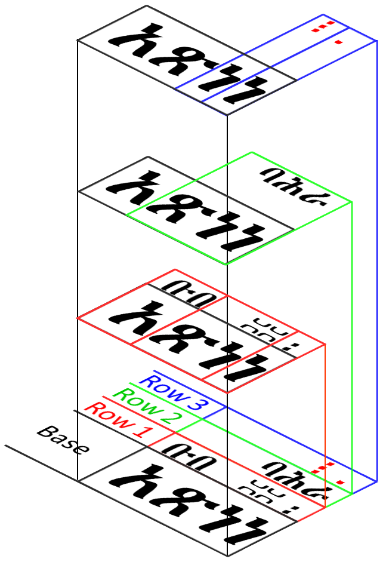

A Document Model for Zaima Chant
This article assumes a strong familiarity with W3C markup and styling of Ruby annotation.
A Pragmatic Model Using Existing Standards
This section presents a model for Zaima interlinear notation that is compatible with existing W3C standards developed for the
requirements of Ruby annotation. While the objectives for Ruby annotations are entirely different from Zaima chant notations,
the two share common interlinear positioning and alignment needs. Quite naturally, many requirements for Ruby annotation are not necessary
for Zaima. Conversely, a number of Zaima layout requirements are not encountered for Ruby annotation.
The following focuses on exploiting Ruby markup, and CSS facilities, to meet the interlinear presentation requirements of Zaima chant.
Ruby and Zaima both share a requirement for the layout of half-scale interlinear text bound to one ore more letters in a line of base text.
A distinctive feature of Zaima notation that immediately distinguishes it from Ruby annotation is the regular occurrence of multiple interlinear
lines, or “rows”, of text. No upper limit is set on the number of rows a line of base Zaima may have, eight rows however have
been observed in corpus (አቋቋም፡ዘወርኃ፡በዓላት። Page 113). Multiple levels or Ruby annotation are possible but irregular. Nested Ruby markup can be used to display additional annotation levels, this
approach assumes some implicit association between the levels. In Zaima notation, the interlinear rows are fully independent from one another
and the positioning and alignment between the base text and a given row cannot be a function of any other interlinear row. Attempting to apply
the nested Ruby technique to format Zaima notation very shortly leads to complications with overlapping markup.  A model for Zaima notation that is able to avoid the overlap problem treats rows as residing on separate document “layers”.
Each layer will contain the same base text and marked up with the notation of a single interlinear row. The notation line offset from the base text
is incremented in each layer. When the layers are viewed together in a projection, the base text of each layer is superimposed upon itself and
the notations appear in successive “rows”. The W3C Cascading Style Sheets standard provides the means to specify and
position layers. An example applicataion appears in Figure 4: Technical note on Figure 4: the markup sample raises the notation by shifting the ruby base A Pragmatic Model Using Existing Standards


Row 3:
<ruby>
<rb>አጽ</rb><rt></rt>
<rb>ነ</rb><rt style="color: red;">᎒</rt>
<rb>ነ</rb><rt style="color: red;">᎐</rt>
</ruby>
Row 2:
<ruby>
<rb>አ</rb><rt></rt>
<rb>ጽነነ</rb><rt>ባሕራ</rt>
</ruby>
Row 1:
<ruby>
<rb>አ</rb><rt>ቡበ</rt>
<rb>ጽነ</rb><rt style="text-align: right;"></rt>
<rb>ነ</rb><rt>᎓</rt>
</ruby>
bottom position and ruby text
along with it. A more desirable approach is to change only the bottom position of the notation text
(<rt>). Moving only the notation text is supported in Safari v11 and Chrome version 60 and earlier but requires <span>
tags within the <rt> tags to apply the bottom property style to (applying bottom to the <rt> is
ignored, thus the need for the inner <span>). Both appraoches have been applied in use case
documents (apply bottom property to notation line only ,
apply bottom property to base). Recommendations for CSS experts are needed here.
{kind=link}
An Independent Model for Zaima Chant
[TBD: Present a high level structural overview (component breakdown) that is compatible with DOM tree.]
[TBD: From here review the markup requirements for each component individually. Suggest a general approach where Zaima may overlap with other chant traditions. The principle proposed here is to use common tag terminally for the common notional subset, then specific tags where needed for a given practice. Thus we have a small "Chant Markup Language" where extension tags produce dialects that support requirements of a specific practice. Consider a schema.org extension approach. Determine what will be the most ammenable to HTML maintainers. ]
The chant element
- Categories:
- Flow content
- Phrasing content
- Palpable content.
- Contexts in which this element can be used:
- Where phrasing content is expected.
- Content model:
- See prose.
- Content attributes:
- Global attributes
- DOM interface:
- Uses
HTMLElement.
The chant element allows one or more spans of phrasing content to be marked with chant
notations. Chant notations are short runs of text (symbols or letters representing notes) presented over base text,
primarily used to score hymns before the advent of staff lines. Staffless chant scoring is practiced
in a number of traditions, notably Byzantine, Gregorian (older form), Hebrew, Znamenny, Ge’ez, Syrian and others.
The content model of chant elements consists of one or more of the following sequences:
-
One or more phrasing content nodes.
-
One or more elements whose semantics are defined only as children of
chant:
The chant element is somewhat analagous to ruby but with a different context for interlinear text.
The cbase element
- Categories:
- None.
- Contexts in which this element can be used:
- As a child of a
chantelement. - Content model:
- Phrasing content
- Content attributes:
- Global attributes
- DOM interface:
- Uses
HTMLElement.
The cbase element marks the base text component of a chant notation. When it is
the child of a chant element, it does not represent anything itself, but its parent chant element uses it as part of determining what it represents.
An cbase element that is not a child of a chant element represents the same thing as its children.
The cbase element is short for "chant base" (the simpler base is an element with other semantics in HTML) has the same role as the rb element in Ruby annotation.
The notation element
- Categories:
- None.
- Contexts in which this element can be used:
- As a child of a
chantor agroupelement. - Content model:
- Phrasing content
- Content attributes:
- Global attributes
- DOM interface:
- Uses
HTMLElement.
The notation element marks the notation line component of a chant notation. When it is
the descendant of a chant element,
it does not represent anything itself, but its ancestor chant element uses it as part of determining what it represents.
An notation element that is not a descendant of a chant element represents the same thing as its children.
The notation element has the same role as the rt element in Ruby annotation.
The notationGroup element
- Categories:
- None.
- Contexts in which this element can be used:
- As a child of a
chantelement. - Content model:
- Phrasing content
- Content attributes:
- Global attributes
- DOM interface:
- Uses
HTMLElement.
An notationGroup element that is not a child of a chant element represents the same thing as its children.
The group element
- Categories:
- None.
- Contexts in which this element can be used:
- As a child of a
notationGroupelement. - Content model:
- Phrasing content
- Content attributes:
- Global attributes
- DOM interface:
- Uses
HTMLElement.
An group element that is not a child of a notationGroup element represents the same thing as its children.
The beit element
- Categories:
- None.
- Contexts in which this element can be used:
- As a child of a
chantelement. - Content model:
- Flow content
- Phrasing content
- Palpable content.
- Content attributes:
- Global attributes
- DOM interface:
- Uses
HTMLElement.
The beit element marks the scope
of the Beit (ቤት) context of a portion of Zaima chant. The Zaima Beit context is given with an identifier that is the abbreviation
of a full name of the Beit. The identifier will appear in the left side margin of the chant text adjacent to the first line where the context
begins. The abbreviation text may be stylized and will appear within the required
marker child element. The full name of
the beit will then be given in the optional child
dfn
element which should not appear in the document by default (display: none). The web author is left to decide how to display the full name of
the beit.
A beit element that is not a child of a chant element represents the same thing as its children.
The marker element
- Categories:
- None.
- Contexts in which this element can be used:
- As a child of a
beit,medgamorhaleitaelement. - Content model:
- Phrasing content
- Content attributes:
- Global attributes
- DOM interface:
- Uses
HTMLElement.
medgam as a stylized reference marker -has complex scope, needs subtags to mark boundaries
A marker element that is not a child of a chant element represents the same thing as its children.
The medgam element
- Categories:
- None.
- Contexts in which this element can be used:
- As a child of a
chantelement. - Content model:
- Phrasing content
- Content attributes:
- Global attributes
- DOM interface:
- Uses
HTMLElement.
The medgam element is used to
set the Medgam (መድጋም) counter for a line of chant. The counter is placed in the
required marker child element which
may also be stylized (typically set to a smaller font-size value).
The medgam scope applies to
two or more interlinear lines of notation which may be fewer than the total number of interlinear lines above a chant line.
The medgam scope will also be disjoint from
its open and closing elements. The suggested convention for binding the medgam to its scope is to give a medgam element
an id attribute and apply the id value to the class attributes of
the notation,
group,
and notationGroup elements
that collectively form the scope of the medgam.
A medgam element that is not a child of a chant element represents the same thing as its children.
|
፪
|
The sereyu element
- Categories:
- None.
- Contexts in which this element can be used:
- As a child of a
chantelement. - Content model:
- Phrasing content
- Content attributes:
- Global attributes
- DOM interface:
- Uses
HTMLElement.
sereyu as a definition marker, like <dfn> -has complex scope, needs subtags to mark boundaries
A sereyu element that is not a child of a chant element represents the same thing as its children.
The haleita element
- Categories:
- None.
- Contexts in which this element can be used:
- As a child of a
chantelement. - Content model:
- Phrasing content
- Content attributes:
- Global attributes
- DOM interface:
- Uses
HTMLElement.
The haleita element marks up
the Haleita (ሃሌታ) shorthand which is keyed from the Halleluya Number, Beit and Silt. The Halleluya Number will be marked up in the
required marker child element which
is also expected to be stylized. The fully expanded haleita may then appear in the optional
dfn
element which should not appear in the document by default (display: none). The web author is left to decide how to display the
expanded from of the haleita .
A haleita element that is not a child of a chant element represents the same thing as its children.
Digua Sample Applying Many Elements